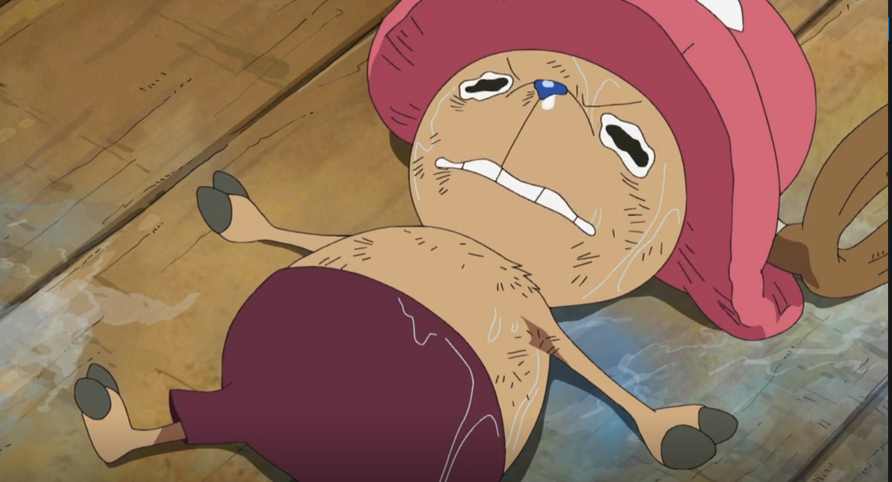

"You miss a 100% of the shots your don't take"
My Favorite Things
- Favorite animals:
- Favorite foods:
- Favorite Anime:
- Favorite hobby:
- Games
- Reading
- Tennis
- Favorite Games:
- Monster Hunter (specifically MHGU)
- Pokemon (Gen 1-5)
- Sekiro
- Diablo II
- Hollow Knight
- Fire Emblem
A picture that represents when I'm happy

Scene from Bocchi the Rock, episode 1, 00:19:23
A picture that represents when I'm sad
Scene from One Piece, episode 311, 00:06:08